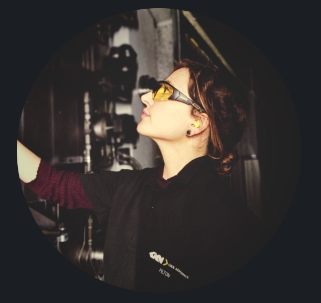

About Me
I bring a blend of technical expertise and practical skills that have been well practiced in a range of environments with focus on operational efficiencies. Alongside this I'm familiar with web development, digital marketing and programming. My hands-on engineering background, combined with project coordination, cross-departmental communication, and problem-solving abilities, make me well-suited for digital and technology roles. I thrive in fast-paced environments, excel at creative troubleshooting, and am committed to continuous learning and innovative solutions.
Experience
Multi-disciplinary Engineer - Gkn Aerospace
Expertise in Systems Diagnosis and Repair: Proficient in diagnosing and repairing complex electrical and mechanical systems, including PLCs and CNC machinery.
Programming Skills: Experienced in various software applications related to engineering processes.
Comprehensive Fault-Finding: Successfully performed fault-finding, machine alignments, and calibrations to enhance operational efficiency, also conducting test cycles to optimise performance.
Maintenance Responsiveness: Effectively responded to scheduled and reactive maintenance needs, ensuring reliability of equipment in aerospace production facilities.
Fabrication and Welding Experience: Competent in general fabrication, welding, rigging, and slinging.
Commitment to Safety and Compliance: Maintained strict adherence to safety protocols and Export Control regulations.
Data Management: Utilized electronic data collection (CONCEPT) to maintain accurate job records.
Quality Assurance Support: during a placement I assisted quality inspectors with audits and data record completion, enhancing overall quality control processes.
Event Production and Digital Marketing Assistant - Sunrise Celebration Festivals
Led email marketing campaigns targeting key audiences to enhance festival engagement.
Managed administrative tasks and maintained data accuracy using Excel.
Supported procurement efforts and acted as a liaison between Site Manager and staff.
Coordinated recruitment processes to ensure adequate staffing for events.
Addressed and resolved issues promptly to ensure smooth event operations.
Supply Chain Administrator - Greencore PLC
Digital Records Management: Created and maintained digital records and invoices for accurate system documentation and keep reports on goods in processes.
Cross-Departmental Communication: Acted as a liaison between internal departments and external suppliers to streamline operations.
Coordinated Supplier Deliveries: Ensured timely shipments aligned with production requirements, and proactively identified and resolved issues within the supply chain.
Operational Efficiency: Enhanced efficiency by building a harmonious flow of goods and data.
Basic knowledge of HTML coding for small webpages and basic troubleshooting, web development, digital marketing, and SEO practices.